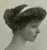
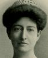
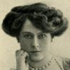
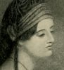

Alison Booth
Alec-Tweedie, Mrs. [Ethel]. Women the World Over: A Sketch Both Light and Gay, Perchance Both Dull and Stupid. London, 1914. New York: Doran, 1914, [1915].
One OCLC item states "with 53 illustrations...including 21 Cartoons by W. K. Haselden." A strange mixture of advice (“DON'T giggle” [2]), anthropology (illustrations of “Mother Love: Dakota Squaw and Child” facing 80), argument-by-example (e.g. lists of eminent women, 22), travel, and feminist argument for equal pay and work, written just before war broke out by a Fellow of the Royal Geographical Society. Interspersed cartoons on changing manners in upper-class Western life; photographs of national female types (e.g. “A Japanese Type of Beauty” facing 72). The author herself poses like an odalisque “in Moorish dress” (frontis.). Index names many women. Related work by Alec-Tweedie: Women and Soldiers (London and New York: Lane, 1918), on women's work during WWI.
-
Queen Alexandra
-
The Duchess of Marlborough
-
Madame Diaz
-
The Duchess of Sutherland
-
Byron's Maid of Athens
Search OCLC WorldCat for this title.
Search Google Books for this title.